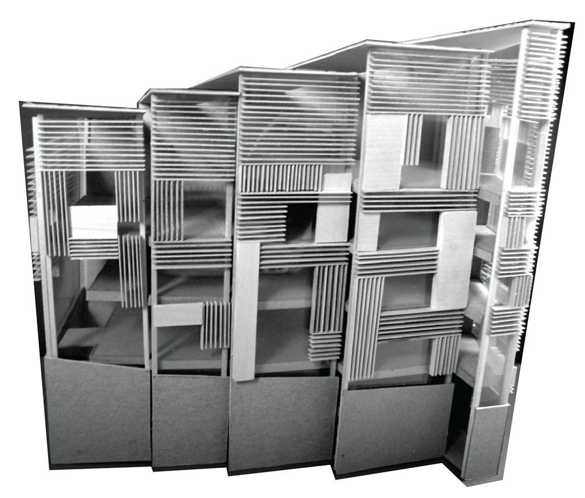
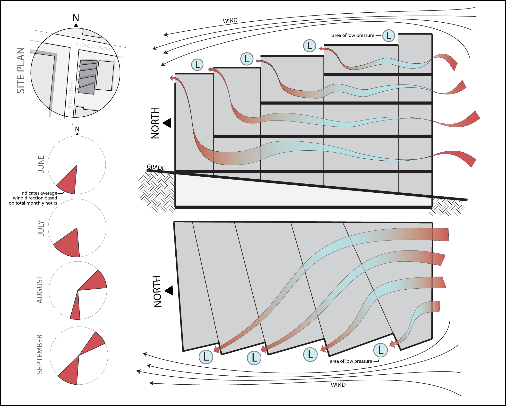

Project Overview: This was my inaugural project in sustainable design. When in the early stages of developing a design concept for the library, a professor encouraged me to let my passion for sustainability dictate aesthetic, operational, and spatial decisions throughout the design process.


Form: The form of the library was designed as a reaction to typical wind patterns to increase the effectiveness of natural ventilation during warm months.

Facade: The facade was designed as a reaction to sun patterns throughout the year and includes a shading system consisting of static horizontal and vertical louvers.